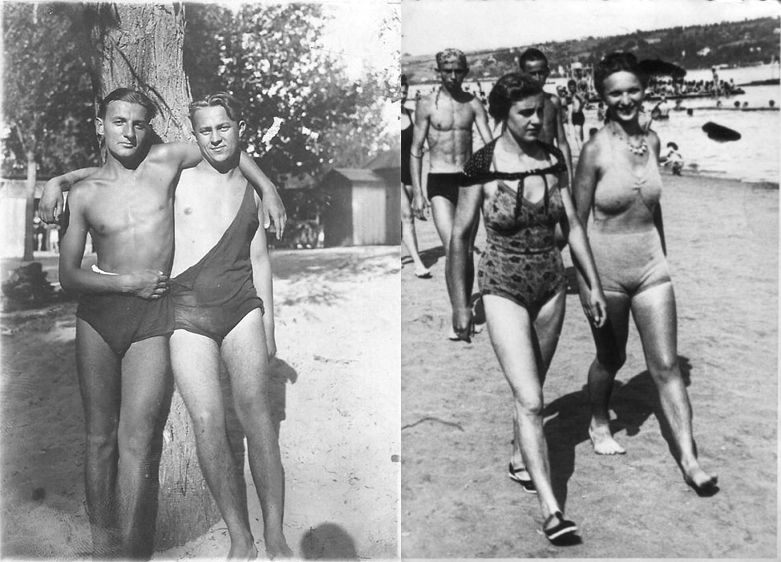

NAŠ KRAJ · DUNAV
Štrand: plaža koju je Crnjanski nazvao simbolom grada
Kad Novosađanin kaže "idem na plažu", ne mora da kaže na koju. Štrand je samo nekoliko minuta od Limana 2 i deo je našeg komšiluka koliko i park ispred zgrade. Na njemu su generacije sa Limana naučile da plivaju, prvi put pocrvenele na suncu i provele leta kojih se i danas sećaju.
Ime je dobio po nemačkoj reči Strand, što znači plaža. Novosađani su se u Dunavu kupali i mnogo pre nego što je plaža postojala. Krajem 19. veka radila su Štenglova kupališta: plivačka škola na drvenom splavu, sa kabinama i bazenima odvojenim za muškarce, žene i decu. Kupaći kostim dobijao se uz ulaznicu, a već tada su postojali spasioci i učitelji plivanja.
Štrand je zvanično otvoren 1911. godine. Već 1913. dobio je drvene kabine, blagajnu, tuševe, restoran i čamce za iznajmljivanje. Dvadesetih godina muški i ženski deo su spojeni, a niknule su kafane, sportski tereni i ljuljaške. Do plaže se išlo "trčikom", malim tramvajem koji je vukao tri vagona, ali i čamcima i fijakerima. Oko 1930. godine Štrand je bio dugačak oko 700 metara i mogao je da primi desetak hiljada kupača, u gradu koji je tada imao oko 40.000 stanovnika. Miloš Crnjanski ga je nazvao najvećim simbolom grada na Dunavu.

Štrand pamti i najtamniji dan Novog Sada. U januaru 1942. godine, za vreme racije, mađarske fašističke snage ubijale su Srbe i Jevreje na obali Dunava kod Štranda. U tri dana stradalo je više od hiljadu Novosađana. Zato je ova obala za grad i mesto sećanja, a ne samo leta.
Posle rata Štrand je ostao gradsko kupalište, sa usponima i padovima. Veliki drveni restoran izgoreo je u požaru. Godine 1981. izgrađen je Most slobode, koji je plažu podelio na dva dela. Taj most je 1999. srušen u NATO bombardovanju, a ruševine su neko vreme ostale u reci. Godine 2000. Štrand je postao deo priče koja će prerasti u EXIT, pa i danas tokom festivala tu kampuju ljudi iz cele Evrope.
Danas Štrand ima terene za košarku i odbojku na pesku, mini golf, zid za penjanje, igrališta za decu i više od 400 stabala. Kapije su od 2008. otvorene i van sezone, pa je plaža i šetalište preko cele godine. Leti kroz njih prođe i do dvadesetak hiljada ljudi dnevno.
I na kraju, Štrand ima i sopstvene igre. Kečket, tenis bez reketa u kome se loptica udara rukama, i tenis glavom vezuju se baš za ovu plažu. Ako ste odrasli na Limanu, verovatno ste bar jedno leto proveli u jednom od njih.
Imate staru fotografiju sa Štranda? Kabine, kupaći kostimi iz sedamdesetih, ekipa sa peškirima? Pošaljite nam, napravićemo galeriju "Štrand nekad".
Pošalji fotografiju ili sećanje